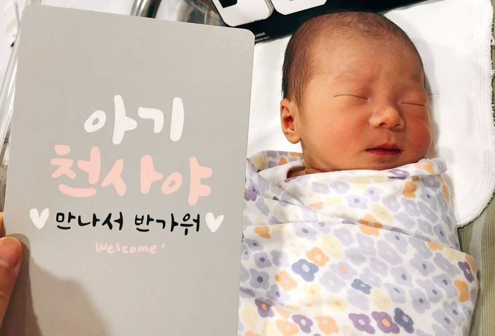
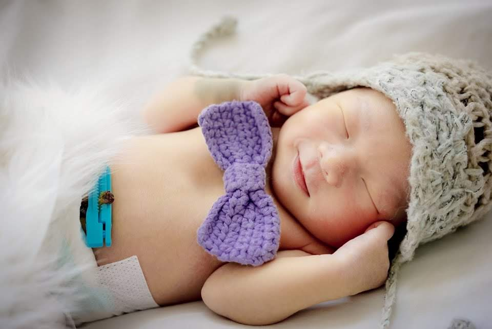
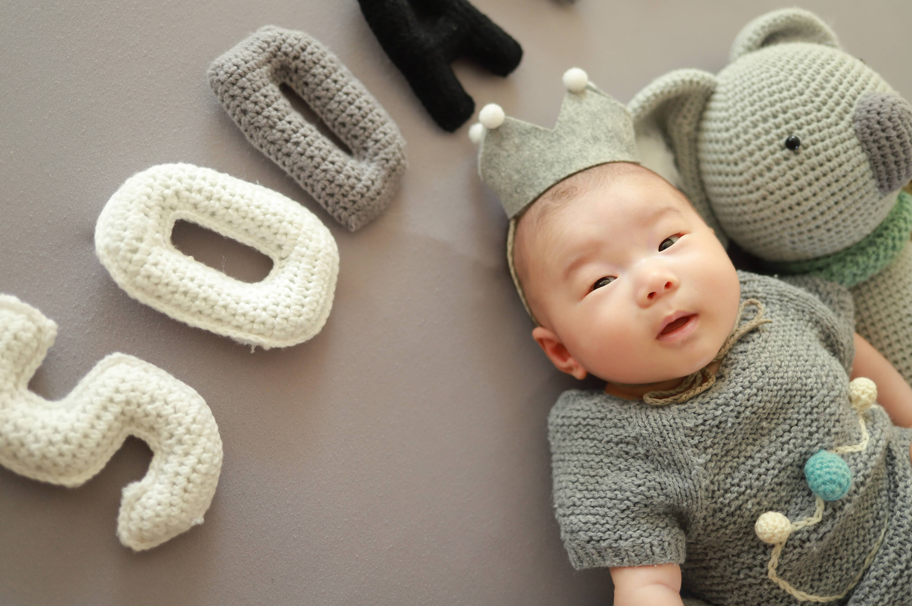
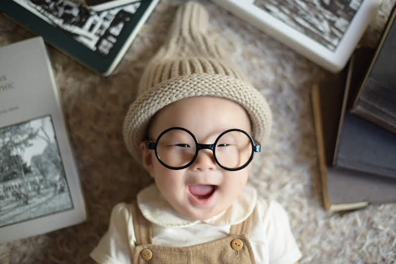
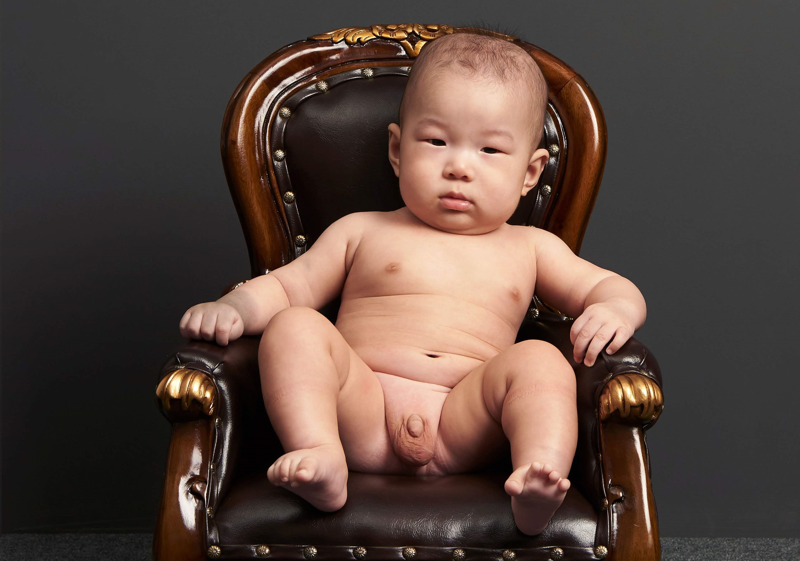
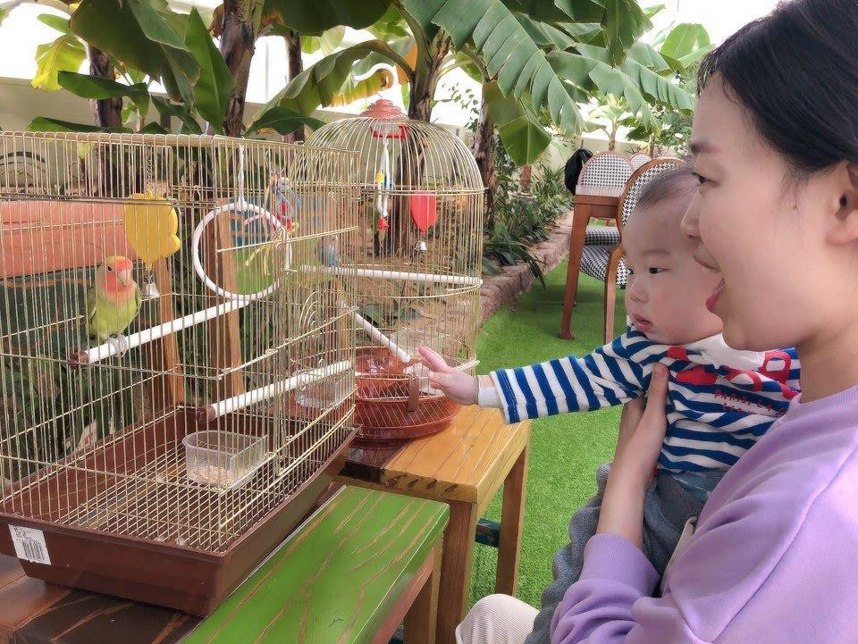
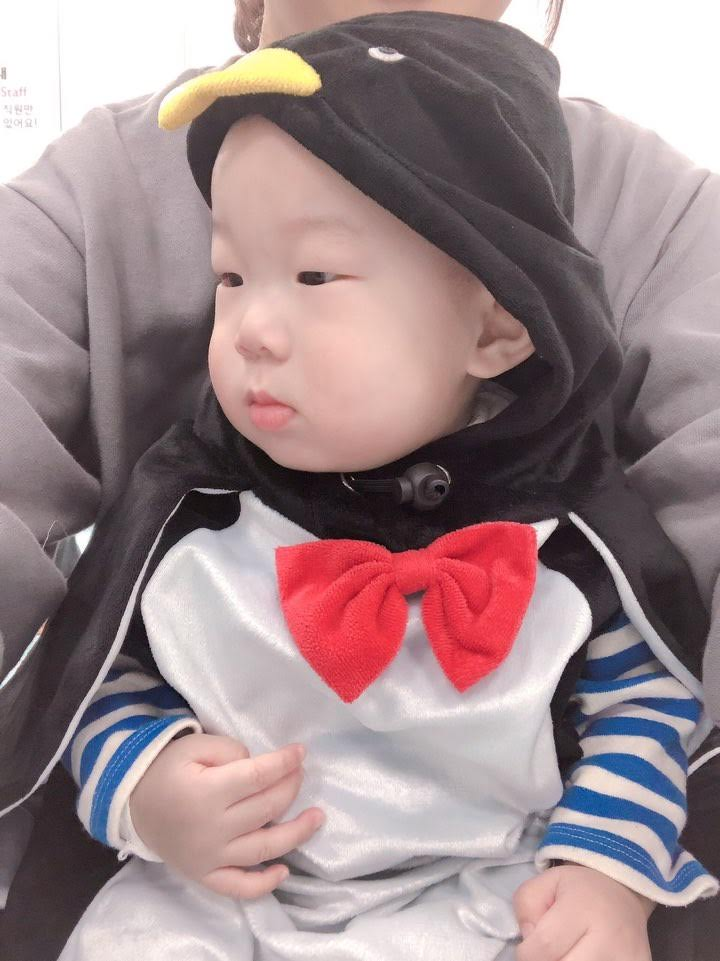

신생아 때의 서준이
태어나서 조리원을 거쳐, 처음 집에 오기까지.
OUR PHOTO DIARY / PICTURE
처음의 설렘도, 평범한 하루도. 다시 보고 싶은 우리의 기록들.

태어나서 조리원을 거쳐, 처음 집에 오기까지.

산후조리원에서 남긴 첫 번째 촬영.

작고 소중한 너의 오십 번째 날.

함께한 백 일, 더 커진 사랑.

색이 없어도 선명한, 백 일의 기억.

함께 나선 카페 나들이의 한 장면.

새로운 세상을 하나씩 만나던 날들.
앨범을 누르면 Google 포토에서 더 많은 사진을 볼 수 있어요. ↗